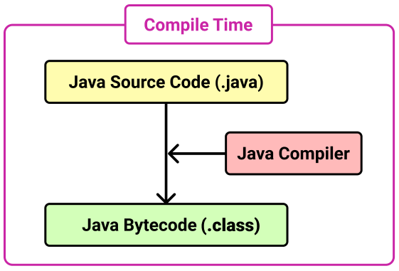
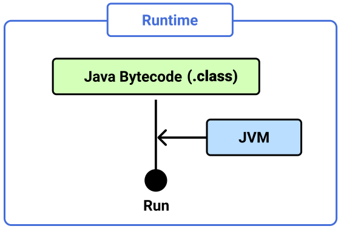
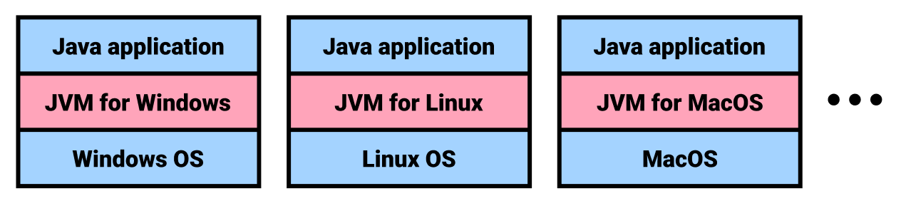

[Java] Java Platform, 자바 컴파일러, JVM, JRE, JDK
Java Platform
Java Platform은 크게 세 가지 에디션으로 나뉜다.
(1) Java SE (Java Platform, Standard Edition)
- 가장 보편적으로 사용되는 에디션
- 자바 데스크탑, 스마트폰 어플리케이션 개발에 사용된다.
- 안드로이드 어플리케이션을 개발할 때에도 주로 Java SE가 사용된다.
- 기초적인 데이터 타입부터 네트워킹, 보안, 데이터베이스 처리, GUI(Swing, AWT) 등 데스크탑 개발에 필요한 API를 포함한다.
(2) Java EE (Java Platform, Enterprise Edition)
- 자바 서버 어플리케이션 개발에 사용된다.
- Java SE의 모든 API를 포함한다.
- 그 외 JSP, Sevlet, EJB 등 서버 어플리케이션 개발을 위한 API를 포함한다.
- 2017년 오라클은 오픈소스 진영인 이클립스 재단에 Java EE를 넘겼으며, 명칭은 Jakarta EE로 변경되었다.
(3) Java ME (Java Platform, Micro Edition)
- Java SE API의 일부만 포함한다.
- 셋톱박스, PDA등 소형 임베디드 시스템을 개발하는데 사용된다.

Java Compiler, JVM, JRE, JDK
(1) Java Compiler
자바로 작성한 파일 이름 뒤에는 .java라는 확장자가 붙으며, 이 파일을 자바 소스코드라고 한다. 자바 컴파일러는 이 소스코드를 자바 바이트코드로 변환한다. 자바 바이트코드는 파일 이름 뒤에 .class확장자가 붙는다.

(2) JVM
JVM(Java Virtual Machine)은 자바 바이트코드를 운영체제에 종속적인 기계어로 변환한 후 실행한다.

서로 다른 운영체제라도 JVM만 설치되어 있다면, 같은 자바 어플리케이션을 다른 운영체제에서 실행할 수 있다.

단, JVM은 운영체제에 종속적이므로 각 운영체제에 맞는 JVM을 설치해야한다.
(3) JRE
JRE(Java Runtime Edition)은 Java 애플리케이션의 실행과 관련된 요소들이다. JRE는 다음 두 요소로 구성되어있다.
- JVM
- Java 애플리케이션 실행을 위한 API
(4) JDK
JDK(Java Development Kit)는 Java 어플리케이션의 개발에 필요한 요소들이다. JRE 외에도 Java Compiler, Java Debugger 등 개발에 필요한 도구들을 포함하고 있다.
JDK 명령어는 Java 설치 경로의 bin 디렉토리에 있습니다.
1 | $ pwd |
Java SE 7, JDK 7, Java 7의 차이점
Java SE는 Java Platform Standard Edition의 약자로 Java Platform의 근간을 이루는 추상적인 명세(Specification)를 의미한다. JDK는 Java SE 명세를 코드로 구현한 구체적인 구현체(Implementation)다. 즉 Java SE 7은 JSR-336로 규정된 Java SE의 일곱 번째 명세를 의미하며 JDK 7은 OpenJDK JDK 7, Oracle JDK 7과 같은 구현체를 의미한다.
Java EE 역시 Java Server Application 개발을 위한 명세(Specification)를 의미한다. Java EE의 구현체(Implementation)는 다음과 같다.
- Java EE 명세를 모두 구현한 WAS
- Oracle WebLogic
- IBM Websphere
- Red Hat Jboss
- Tmax JEUS
- Java EE 명세의 일부를 구현한 Web Container
- Apache Tomcat
추가적으로 엄밀히 말하자면 Java 7은 정확한 표현이 아니다.. 하지만 Java SE 7이나 JDK 7보다 사용하기 편해서 흔히 Java 7이라고 부른다.
Mac OS 환경에서 JDK 버전 확인하기
MacOS에는 Java Platform(JDK)가 기본적으로 설치되어있다. 터미널에서 다음과 같이 설치 여부를 확인할 수 있다.
1 | $ java -version |